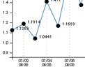
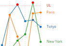
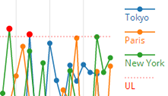
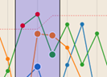

JavaScript jsID3
I tried reading ID3 tags in MP3 files.
Keywords : バイナリデータ, 文字コード変換, Base64変換
I tried reading ID3 tags in MP3 files.
Keywords : バイナリデータ, 文字コード変換, Base64変換
Octocat goes through a maze! (JavaScript MVC SVG Example)
Keywords : グラフデータ構造, MVC, SVG
An example of Processing code.
Keywords : Math & Physics
Fireflies above a Stream.
Keywords : Particle, Glow, Pixels
Infinite Scroll to the Right
Keywords : Scroll on Canvas, Parallax, Noise
A Black Ball emits Particles
Keywords : Particle, Glow, Pixels, and sinθ&cosθ
The Seto Inland Sea in the Summer Evening
Keywords : tint

A Single Series Line Chart - D3.js
Keywords : SVG, Chart, 折れ線グラフ(Single)
A Multi Series Line Chart - D3.js
Keywords : SVG, Chart, 折れ線グラフ(Multi)
A Line Chart with Zoom & Pan - D3.js
Keywords : SVG, Chart, 折れ線グラフ(Zoom & Pan)
A Line Chart with Brush - D3.js
Keywords : SVG, Chart, 折れ線グラフ(範囲選択)
